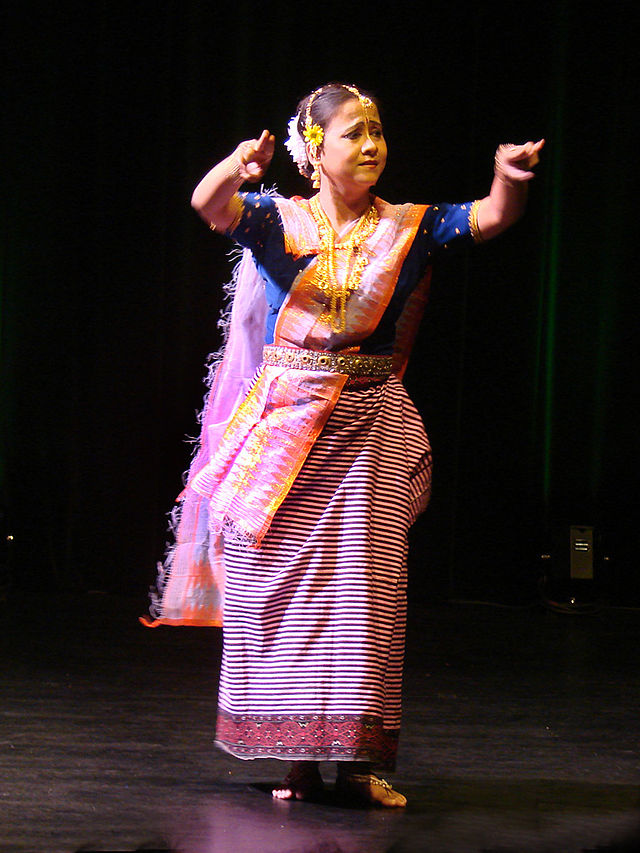

Mayek Naibi
Mayek Naibi holds a cultural significance in the traditional dresses of Manipuri womens. In the phanek( a skirt wrapped around the waist), a decorative strap is attached at the hem of the fabric. This fabric is usually handwoven with a mixture of contrast and mismatching colors. It is then attached to the main garment fabric. Mayek Naibi is a creative work of Manipuri designers and weavers, symbolizing their love for their culture. These are the famous traditional dress of Manipur women that proudly displays their state’s customs and beliefs.